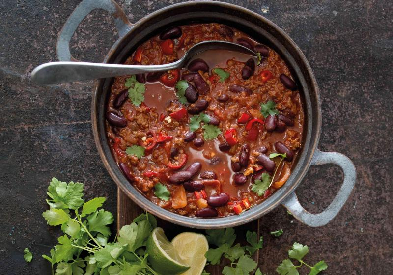

Chilli Con Carne

Description
Chilli Con Carne is one of my all-time favorites. I usually put too much chilli and then it's super hot, but that's what makes this dish so much fun.
Ingredients
- 500g of ground beef meat
- 400g of canned tomatoes
- 400g of red beans
- 300ml of beef stock
- olive oil
- Veggies:
- 1 large onion
- 1 red bell pepper
- 4 cloves of garlic
- Spices:
- dried chilli
- 1 tbsp. of sweet paprica
- 1 tbsp. of cumin
- 4 tsp. of tomato purée
- 0.5 tbsp. of marjoram
- salt
- pepper
Steps
- Put olive oil in a pan and add chopped onion. Afer a while, add garlic.
- Lower the heat and add the beef meat with salt and pepper. Roast until all the meat is brown and separated in small chunks.
- Add beef stock to the pan along with canned tomatoes and tomato purée
- Boil for about 20 minutes. Add a bit of water if needed.
- Add red beans and red bell peppers, and boil for 10 minutes.
- Add dried chilli, sweet paprica, cumin, and merjoram.
- Let the sauce rest for 10 minutes.
- Serve with fresh bread.
Last cooked in 2021.